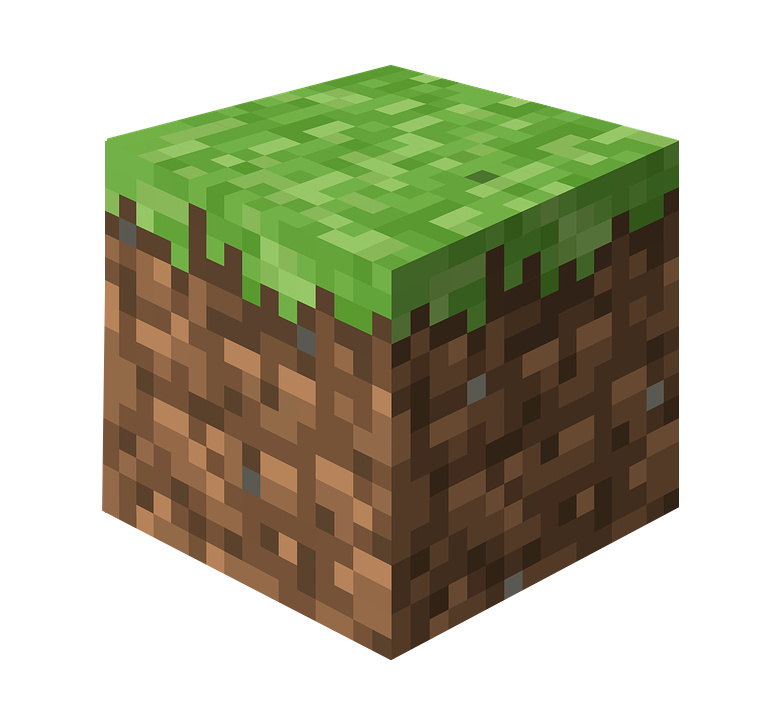
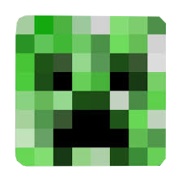
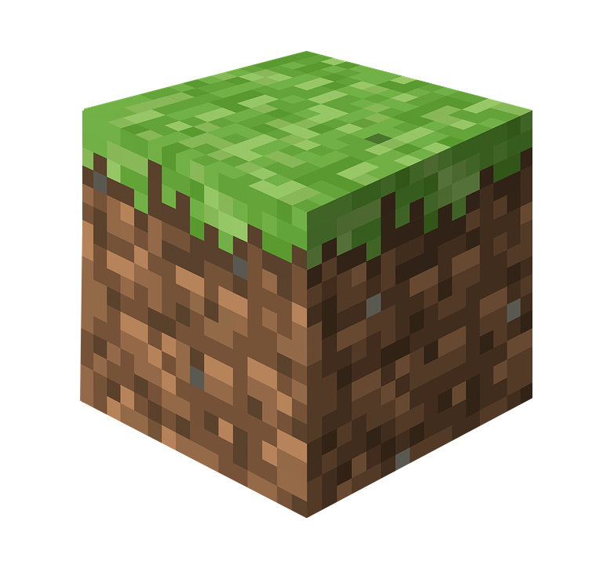
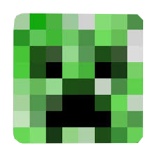
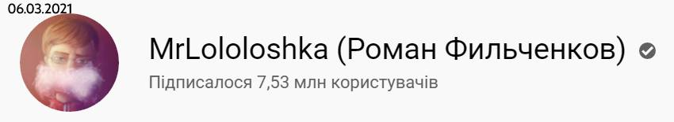

Ігровий процес
Гравець будує паркан у
«Творчому» режимі
Основи
Minecraft дає в розпорядження гравцеві тривимірний процедурно генерований світ, що складається з кубічних блоків, які можливо використовувати на свій розсуд. Блоки поділяються на матеріали та об'єкти, котрі не обов'язково мають видиму кубічну форму, але займають умовний один кубик. Гра не ставить перед гравцем однозначних цілей, але пропонує безліч можливостей і занять: досліджувати світ, створювати різноманітні споруди й предмети, битися з різними супротивниками. Можлива як одноосібна гра, так і багатокористувацька, коли багато гравців взаємодіють в межах одного світу.
У Minecraft можливо створити будь-який об'єкт, якщо мати вдосталь блоків відповідних матеріалів, деталей і рецептів. Головний спосіб отримання блоків — це знищення кубиків ґрунту, скель, дерев тощо, котрі автоматично складаються в інвентар. Деякі матеріали руйнуються тільки спеціальними знаряддями, які необхідно попередньо знайти або виготовити. Шляхом поєднання блоків і предметів згідно з рецептами можливо створювати нові блоки (створення нових блоків в Minecraft називається крафтом або крафтингом[4]). Наприклад, з блоків дерева створюються дошки, а з піску — камінь пісковик. Деякі блоки не можуть існувати самостійно, проте змінюють характеристики інших. До прикладу, жовтий барвник, отриманий з квітів, забарвлює такі матеріали, як бавовна та деякі інші.
При кожній новій грі створюється новий світ з випадковим ландшафтом. Сам гравець має в світі гри втілення у вигляді персонажа — чоловічка (його, також, називають персонаж, гравець, чи Стів (Стів? включаючи знак питання[5]), як і все навколо, складеного з кубиків (пікселів). Він має загальний інвентар, поділений на комірки, куди складаються всі знахідки чи вироби, і особисте спорядження, таке як обладунки чи знаряддя і зброя. Кожна комірка вміщує від 16 до 64 однотипних блоків (одна заповнена тим чи іншим ресурсом комірка в інвентарі гравця зветься стаком (від англ. stack — «стос»)[6]). На екрані показується панель швидкого доступу, куди можливо покласти до 9-и найпотрібніших типів блоків (предметів чи знарядь).
Ігровий світ населяють моби: тварини й фантастичні істоти. Деякі з них мирні та не завдають шкоди, інші можуть атакувати персонажа або псувати його творіння. Їх можна знищити, отримавши натомість незвичайні матеріали чи предмети.
Режими гри
У Minecraft є п'ять режимів гри: Творчість (англ. Creative), Виживання (англ. Survival), Пригода (англ. Adventure), Хардкор (англ. Hardcore) і Спостерігач (англ. Spectator).
Творчість. Цей режим пропонує мінімум обмежень і передбачає безперешкодне створення будь-яких об'єктів. Гравці одразу ж отримують нескінченну кількість всіх видів блоків і спорядження. Усі блоки знищуються з одного удару, незалежно від знаряддя в руках. Завдяки цьому гравці можуть створювати як величезні тривимірні будівлі на кшталт замків, так і займатися піксель-артом — створенням двовимірних картинок з різнокольорових блоків. У творчому режимі також можна легко створювати автоматичні механізми з використанням особливого матеріалу — редстоуну, що передає сигнали. Персонаж у режимі «Творчості» не може померти, виняток — падіння в порожнечу, простір, який обмежує ігровий світ або за допомогою спеціальної команди /kill). З версії Minecraft beta 1.8 він може літати, якщо гравець двічі натисне клавішу стрибка (зазвичай Пробіл). Монстри в цьому режимі не завдають ніякої шкоди. Це єдиний доступний режим у класичних версіях Minecraft і основний для гри. Також він доступний у бета-версії після оновлення Adventure Update.
Виживання. Щоб виконати свій задум, гравець повинен подорожувати і шукати потрібні блоки, боротися з мобами, вести господарство, виготовляти нові матеріали і майструвати інструменти. Тут персонаж має, крім інвентаря, шкали здоров'я, голоду і досвіду. Здоров'я представлене символами сердечок, які втрачаються, коли персонаж зазнає атаки, падає з великої висоти, потрапляє у лаву, зазнає інших ушкоджень. Поповнюється здоров'я споживанням їжі. Голод представлений символами курячих ніжок, які поступово автоматично споживаються. Коли їх не лишається, їжа перестає поповнювати запас здоров'я. Опинившись під водою, чоловічок може перебувати в ній, поки не вичерпає запас повітря (відображається у вигляді бульбашок). Зі знищенням ворогів (особисто, але не через дію оточення) з них випадають сфери досвіду, котрі слід піднімати, щоб заповнити шкалу досвіду. Пізніше він застосовується, щоб зачаровувати предмети, надаючи їм спеціальних властивостей, або ремонтувати їх. В разі вичерпання здоров'я (смерті) гравцев і пропонується відродити персонажа на початковій точці спавну (появи), але тоді він втратить весь вміст інвентаря, також йому пропонують вийти в головне меню.
Пригода. Режим, заснований на настільних рольових іграх. Тут немає змоги руйнувати чи встановлювати блоки, але можна подорожувати і взаємодіяти з предметами і мобами.
Хардкор. Подібний на «Виживання» за винятком того, що діє найважча складність — коли здоров'я персонажа вичерпається, він не може відродитися. Після його загибелі гравцеві пропонується одразу видалити всю свою працю і почати заново, або оглянути перед цим світ.
Спостерігач. В цьому режимі гравці можуть літати як у «Творчості», але мають здатність пролітати крізь блоки і дивитись від особи будь-якого гравця або істоти. Однак, гравці не можуть встановлювати й знищувати блоки. В цьому режимі, як і «Творчості», можна померти, лише залетівши за межі світу або набравши спеціальну команду /kill. Режим польоту неможливо вимкнути. При польоті крізь тверді блоки видно найближчі порожнини в товщі блоків.
Незерске обновлення
Незер
- Нижній світ — наповнений скелями та лавою світ, який ще називають Підсвітом або Незером (Nether). При розробці Маркус Персон не хотів релігійних відсилок, тому назвав світ саме Нижнім, а не Пеклом, попри його образ. Складається цей світ в основному з пекельного каменю (незериту) (англ. Netherrack). Щоб потрапити до нього, гравцеві потрібно побудувати портал з обсидіану й активувати його запальничкою (англ. Flint and Steel).
Типи світів
У грі існує сім типів світів.
- Звичайний: тип світу за замовчуванням, який імітує усереднену земну поверхню, що має помірні перепади висот, підземелля, скелі, гори, різні водойми, біоми, тощо.
- Суперплаский: рівна поверхня, що складається з землі. Вона знаходиться на порівняно невеликій висоті і зі значним освітленням, через що у величезній кількості спавняться істоти кріпери та слимаки, села, для яких теж потрібна пласка поверхня. Також, після оновлень з'явилися шаблони для генерації Суперплаского світу (новий шаблон Порожнеча з'явився в версії 1.9)
- Великі біоми: тип світу, доданий в снапшоті 12w19a (до 1.3.1). Відрізняється від типу світу Звичайний тим, що біоми тут збільшеного розміру.
- Розширений: від звичайного типу відрізняється наявністю надзвичайно високих гір, що ускладнює пересування і виживання в грі.
- Користувацький: гравець має можливість самотужки налаштувати світ, детально вказавши які ландшафти та об'єкти мають бути наявні, математичні основи світу, або обрати готовий варіант з-поміж пропонованих. З'явився у версії 1.8.
- Режим налагодження: автоматично вмикається режим спостереження. Генеруються всі можливі у грі блоки. Використовуються для перевірки текстур.
- Власний: даний тип світу дозволяє створити світ який повністю складається з одного біома. Також, в налаштуваннях створення світу крім біома можна налаштувати варіант створення: поверхня, літаючі острови або печери.
Головне фото майнкрафт
Звичайний світ
- Звичайний світ — світ, в якому з самого початку гри перебуває гравець. Там знаходиться багато цінних матеріалів, на поверхні росте багато рослин, є зміни погоди, дня і ночі. Нижній кордон світу закритий прошарком корінної породи (бедрок) — породи, яку неможливо проламати.
Моби
З мобів гравці можуть добувати різні унікальні ресурси (які випадають (дропаються) після смерті моба). Моби поділяються на 5 видів: дружні, ворожі, нейтральні, домашні та створювані. На відміну від більшості ігор, де моби незалежні від гравця, тут всі моби існують лише в певному радіусі від його персонажа (в мережевій грі від усіх гравців), тому, якщо гравець відійде від ворожого чи нейтрального моба занадто далеко, той зникне (якщо він не у закритому об'єкті). Це зроблено для поліпшення продуктивності гри — процесор не навантажується непотрібними гравцям обчисленнями. На деякій відстані від персонажа періодично випадково генеруються (спавняться) нові моби. Ворожі моби (зомбі, скелети, кріпери, павуки) та нейтральні (мандрівники Краю тощо) генеруються в малоосвітлених або неосвітлених місцях. Дружні моби (свині, корови, курки тощо) генеруються залежно від біома та зазвичай одноразово.
До двох груп одразу належать: павуки (вдень — нейтральні, вночі — ворожі), залізні големи (вони можуть створюватися як гравцем, так і селянами), та висушувач (створюється гравцем, але є ворожим до нього). Якщо гравець створив залізного голема, то голем не нападе на творця за жодних умов, а якщо ж голема створили селяни, то при спробі гравця вдарити селянина чи самого голема, він буде оборонятись.
- до дружніх мобів належать: корови, вівці, свині, курки, папуги, кальмари, селяни, кажани, грибні корови, черепахи, різні види риб, оцелоти, мандрівний торговець. Вони не нападають, навіть якщо їх атакувати.
- До нейтральних мобів належать: свинозомбі, печерні та звичайні павуки (при денному світлі, у темних місцях вони ворожі), ендермени (мандрівники Краю) та білі ведмеді (крім дитинчат), дельфіни, лами та лами торгувальника, залізні големи (в селах). Стають ворожими, якщо на них напасти (свинозомбі, білі ведмеді тощо), подивитись не через прозорий об'єкт або не маскуючись (ендермени чи залізний голем), або вдарити деякого іншого моба (лами торгувальника будуть плюватись у гравця який вдарив мандрівного торговця, при нападі на свинозомбі на вас нападуть всі моби цього типу) .
- до ворожих мобів належать: зомбі, скелети, скелети-наїзники, скелети-візери, візери, примари, павуки (вдень у темних місцях і вночі), кріпери, ґасти, слимаки, магмакуби, лусківниці, ендерміти, блейзи, відьми, зомбі-селяни (створюються, коли селянина заражає зомбі), вартові, старі вартові, шалкери, поборники, бісики, водяники, риба фугу, фантоми, розбійники, руйнівники, рубники. Вони завжди нападають на гравця, щойно помітять його. У творчому режимі всі ворожі моби стають пасивними, крім Ендердракона та висушувача.
- до домашніх мобів належать: коти, приручені вовки, папуги, та коні (віслюки, мули), лами. Приручені вовки б'ються з усіма мобами, крім кріперів, які намагаються нашкодити гравцеві, натомість коти можуть лише відлякувати кріперів та фантомів, а лами — неприручених вовків.
- до створюваних мобів належать: залізні големи, сніговики, та висушувач.
Край майнкрафт
Ендер мір
- Край (Кінець) — найменший світ, подібний на іншопланетний пейзаж, що складається з летючих островів. Потрапити в нього можливо, знайшовши Фортецю (знаходиться переважно в підземеллях звичайного світу) і в ній — спеціальний портал. Покинути Край можливо тільки загинувши, або перемігши боса, дракона Краю.
Біоми
Minecraft біоми — це природні зони, на які світ гри було поділено після оновлення Halloween Update. Біоми представляють собою зони ландшафту з різним рельєфом, рослинами та блоками. До цього оновлення користувач міг задати на створюваній карті певні особливості, наприклад — сніжна або трав'яна карта, однак з появою біомів все це було об'єднано.
Розробка
Minecraft розвинула низку ідей браузерної гри Infiniminer, зокрема графіку[12]. Початково написана на Java шведським програмістом Маркусом Перссоном («Notch»), Minecraft надалі розвивається його компанією Mojang, заснованою за рахунок прибутків від гри. Альфа-версія була випущена 17 травня 2009,[13], бета версія — 20 грудня 2010.[14] Офіційні випуски гри для iOS[15], Android і повна версія для ПК були представлені 18 листопада 2011 на конференції фанатів MineCon 2011, яка відбулася в Лас-Вегасі. Minecraft — будівельна пісочниця у відкритому світі з елементами рольової гри (зіллєваріння, досвід, боси). В ній гравець може збудувати будь-які будівлі чи механізми та виготовити різні предмети, які допоможуть у процесі гри.
15 вересня 2014 року було оголошено про купівлю компанії Mojang корпорацією Microsoft за приблизно 2,5 мільярдів доларів США. Внаслідок цієї події, Microsoft стає власником усієї інтелектуальної власності Mojang, включно з грою Minecraft.
В серпні 2016 року випущена версія Minecraft для окулярів віртуальної реальності Oculus Rift
Bedrock Edition
Minecraft: Bedrock Edition (раніше Minecraft PE) — кросплатформна версія гри Minecraft. Розробляється Mojang з 2011 - дотепер для Android, iOS, Windows 10, Nintendo Switch, Xbox. Актуальними версіями є 1.2.20.2 - 1.14.1.5 (в бета-тестуванні 1.15.0.53).
Головне меню гри на Android
- 2011 — Minecraft PE 0.1
- 2012 — Minecraft PE 0.5
- 2013 — Minecraft PE 0.8
- 2014 — Minecraft PE 0.10
- 2015 — Minecraft PE 0.13
- 2016 — Minecraft PE 0.16
- 2017 — Minecraft PE 1.0
- 2018 — Minecraft Bedrock Edition 1.2 - 1.8
- 2019 — Minecraft Bedrock Edition 1.9 - 1.14
Дата випуску кожного видання
- 2011 — Pocket Edition
- 2014 — Xbox One Edition
- 2015 — Windows 10 Edition
- 2017 — Nintendo Switch Edition
Бета-тест мультиплеєрної гри
Історія
В лютому 2011 року стало відомо, що Арон Неймінен, один зі співробітників Mojang, займається розробкою iOS-версії Minecraft для iPhone та iPad. Засновник компанії, Маркус Перссон, заявив, що iOS-видання не отримуватиме кожне оновлення так швидко, як версії для персональних комп'ютерів.[22] На своїй твіттер-сторінці 8 жовтня 2011 року Єнс Бергенстен підтвердив, що Pocket Edition розроблюється з допомогою мови C++, а не Java, а тому відеогра працюватиме й на платформі iOS[23]. Pocket Edition для iOS вийшла 17 листопада 2011 року[24]. З кожним оновленням Pocket Edition все ближче наближалася до оригінальної відеогри для комп'ютерів.
10 грудня 2014 року Pocket Edition була випущена для Windows Phone, незадовго після придбання Mojang корпорацією Microsoft[26][27]. Pocket Edition 1.0 вийшла з альфа- та бета- тестувань 19 грудня 2016 року лише для iOS та Android. Проте вже на початку 2017 року Microsoft припинила підтримку останніх Windows Phone-версій Minecraft: Windows Phone 8.1 та Windows 10 Mobile, які так і не отримали PE 1.0. На основі Pocket Edition також працюють версії відеогри для Fire OS та Fire TV від інтернет-компанії Amazon, Samsung Gear VR, Apple TV.[28]
20 вересня 2017 року з великим оновленням для Minecraft під назвою «Better Together», Mojang об'єднала версії для платформ Android та iOS (Minecraft: Pocket Edition), віртуальної реальності, Windows 10 та Xbox One (Minecraft: Xbox One Edition) під спільною назвою Minecraft, прибравши підзаголовок Pocket Edition[29][30][31]. Проте звідтоді Minecraft перестала підтримувати кросплатформну гру[30].
Під назвою Bedrock Edition об'єднують версії Minecraft з версії 1.2., засновані на гральному рушієві Bedrock Engine, написаному не мовою Java[30]. До затвердження назви Bedrock Edition гра існувала у виданнях — Windows 10 Edition, Pocket Edition, Xbox One Edition, Nintendo Switch Edition. Утім, Java Edition, Legacy Console Edition, Education Edition, China Edition, Pi Edition, Xbox 360 Edition не належать до Bedrock Edition. Ідеї створити Bedrock Edition виникли у власників телефонів, комп'ютерів та ігрових консолей, щоб вони мали можливість грати разом, незалежно від пристроїв[32].
Оцінки й відгуки
Загалом критики високо оцінили Minecraft. Гра отримала високу оцінку за свободу, яку гравці можуть проявити в творчості, а також простий rеймплей
Для ПК (Windows і Mac OS) середня оцінка склала 93 бали зі 100 на агрегаторі Metacritic. Для PlayStation 3 оцінки встановилися на рівні 89/100, Xbox 360 — 82/100, PlayStation 3 — 89/100, Xbox One — 88/100, Wii U — 77/100. Версії для портативних консолей виявилися нижчими: для Nintendo 3DS — 62/100, PlayStation Vita — 84/100, Nintendo Switch — 86/100[56].
У червні 2016 року Minecraft продалася накладом 106 млн копій для всіх платформ, ставши другою найпродаванішою відеогрою в історії після Tetris[57]. Станом на січень 2018 року продажі Minecraft склали 144 млн копій при 74 млн активних користувачів.
Газетою «The Guardian» у 2019 році Minecraft було присуджено № 1 в переліку 50-и найкращих відеоігор XXI століття.
Супутня продукція
На тему Minecraft створено велику кількість мерчендайзу. Mojang співпрацює з Інтернет-магазином Jinx, щоб продавати такі товари, як одяг з символікою Minecraft, картонні конструктори, репліки внутрішньоігрових предметів, костюми персонажів.
6 червня 2012 року було видано офіційний набір конструкторів Lego Minecraft[61]. У березні 2013 Mojang уклала угоду з видавцем дитячої літератури Egmont Group, щоб видавати керівництва з гри та тематичну періодику.
Інші ігри MOJANG
Terraria не є грою MOJANG вона тут є бо це ігри Маркуса Персона (Нотча) основателя гри майнкрафт
 



Тут майже вся музика з пластинок майнкрафт
C418 — Key
C418 — Door
C418 — Subwoofer Lullaby
C418 — Death
C418 — Living Mice
C418 — Moog City
Куточьок лололошки
Тут 3 скіна Лололошки
MrLololoshka (Лололошка; наст. Ім'я - Роман Фільченков) - геймер і відеоблогер, досить популярний в російській сегменті Youtube. Незважаючи на знаменитість його каналу на Youtube, його відео мають досить одноманітну тематику, в основному: відео-проходження або огляди по грі Minecraft і інших ігрових новинок; онлайн-стрім на порталі Twitch. Кар'єру відеоблогер почав ще влітку 2012 року. У цей період в основному займався оглядами модів на гру Minecraft. Надалі, на його каналі з'явилися відео-проходження і інші відео з подібною тематикою. На сторінці Вконтакте сказано, що народився блогер 17 квітня 1998 року в місті Барнаул Алтайського краю.Також він робить сборки які, можна скачати на комп'ютерній версії сайту!
В Лолошки є багато зборок всі файли які є тут якось связані з Лололошки
майже всі сборки лололошки є на версію майнкрафту 1.12.2
Вот як змінити курсор на курсор лололошки скачаний файл перемістіть в диск с потім знайдіть папку Cursor і скиньте туди файл який скачли